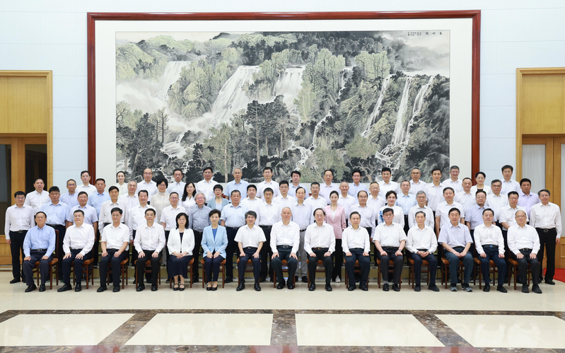

中共中央政治局常委、中央书记处书记蔡奇8月3日现身北戴河，看望暑期休假专家。这意味着「北戴河时段」已经启动。但北戴河会议的政治功能早已弱化，今年该议的都议了，根本「无会」。
港媒5日刊出署名文章指出，每逢8月，大多数中共中央领导人会在央视新闻联播「消失」两周，跑到海滨城市北戴河休假式办公，并以中共中央、国务院名义邀请专家人才代表暑期到北戴河休假。
去年获邀到北戴河休假、坐在蔡奇两侧的是中国工程院院士、医学家钟南山和张伯礼，今年则是中国科学院院士、清华大学人工智能学院院长姚期智，中国科学院院士、南方科技大学校长薛其坤，据称今年休假以「爱国奋斗」为主题。
文章称，过去十几年，一踏入8月，某些境外和社交媒体照例进入「北戴河狂欢」，神秘兮兮探讨「北戴河会议」，有的还要言之凿凿搞些什么「元老放话」「争吵剧烈」等等。
关于是否存在「北戴河会议」，在毛泽东时代，北戴河确实是「夏都」，作出「炮打金门」等系列重大决策，邓小平和江泽民时代也会在北戴河召开会议。胡锦涛执政后，2003年已宣布中央五大班子不到北戴河办公。习近平登场之后，更是弱化了北戴河的政治功能，但北戴河疗养制度依然保留。
7月25日，政治局常委会召开会议，研究部署防汛抗洪救灾工作。7月30日，政治局召开会议，部署下半年经济工作。该议的已经议了，北戴河根本「无会」。
北京青年报指出，以中共中央、国务院名义邀请专家人才代表暑期到北戴河休假，是中共和大陆官方人才工作的一项重要制度性安排。1987年夏天，中共中央邀请14位作出重大贡献的科技专家到北戴河休假。7月24日，邓小平会见了专家代表。此后，中共中央、国务院举办北戴河暑期专家休假活动逐步形成制度。
报导称，2001年起，中国首次把人才问题提升至国家战略层面，专家北戴河夏季休假作为制度被确定下来，北戴河也由此成为 「专家人才会客厅」。中组部有关负责人曾表示，中共中央邀请专家到北戴河休假，主要是让专家暂时放下手中繁忙的工作，带着家人，充分地休息和放松。